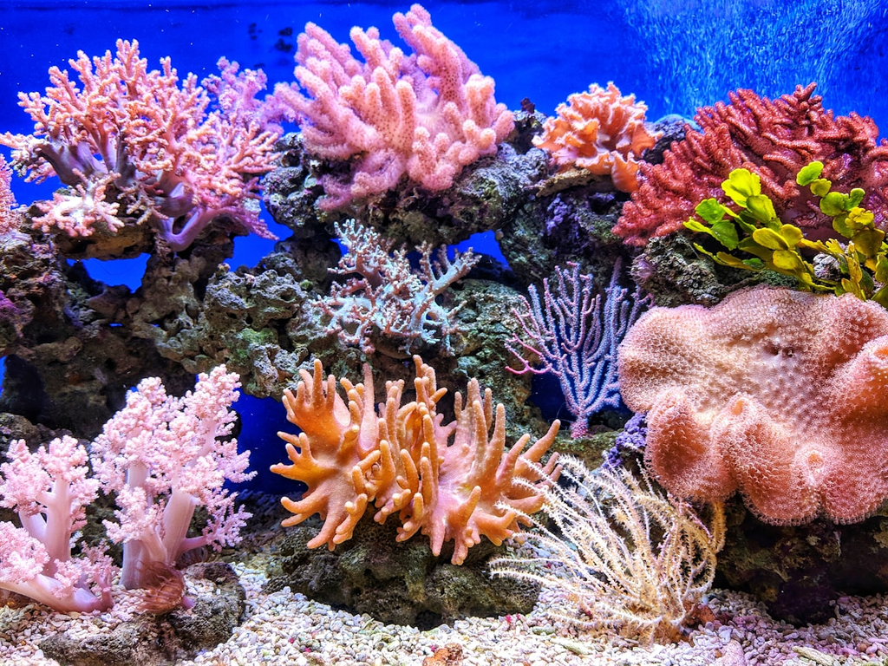

Warum Pflanzen im Aquarium wichtig sind
Aquarienpflanzen sind weit mehr als nur eine schöne Dekoration. Sie sind das Herzstück eines gesunden Aquariums und übernehmen lebenswichtige Aufgaben im Ökosystem. Durch die Photosynthese produzieren sie Sauerstoff, der von Fischen und anderen Bewohnern zum Atmen benötigt wird. Gleichzeitig binden sie überschüssige Nährstoffe wie Nitrat und Phosphat, die sonst Algenwachstum fördern würden.
Pflanzen bieten deinen Fischen und Wirbellosen zudem natürliche Versteckmöglichkeiten, Laichplätze und reduzieren Stress – besonders wichtig in der Einfahrphase oder bei scheuen Arten. Ein gut bepflanztes Aquarium kommt außerdem mit weniger Wasserwechseln aus, da die Pflanzen als natürlicher Filter arbeiten. Für Anfänger sind lebende Pflanzen daher keine Option, sondern eine klare Empfehlung für den Einstieg.
🛒 Starterpaket Aquarienpflanzen
Pflegeleichte Anfängerpflanzen im Set – perfekt für den Start ins grüne Aquarium.
👉 Pflanzen-Sets bei Amazon entdeckenPflegeleichte Anfängerpflanzen – Diese Arten gedeihen garantiert
Nicht jede Wasserpflanze ist für Einsteiger geeignet. Manche Arten stellen hohe Ansprüche an Licht, Nährstoffe oder CO2. Die folgenden Pflanzen sind bekannt für ihre Robustheit und verzeihen auch den einen oder anderen Pflegefehler – ideal, um erste Erfahrungen zu sammeln.
Anubias (Anubias barteri, Anubias nana)
Der absolute Klassiker unter den Anfängerpflanzen. Anubias wächst langsam, benötigt wenig Licht und kommt ohne CO2-Düngung aus. Die Pflanze darf jedoch nicht eingepflanzt werden – ihr Rhizom (das dickere horizontale Stück, aus dem die Blätter wachsen) muss oberhalb des Bodengrunds bleiben, sonst fault sie. Binde sie stattdessen an Wurzeln, Steine oder Aquarienholz fest. Mit ihren dunkelgrünen, ledrigen Blättern ist sie ein echter Blickfang.
Javafarn (Microsorum pteropus)
Ähnlich pflegeleicht wie Anubias, aber mit feineren, hellgrünen Blättern. Auch Javafarn darf nicht eingepflanzt werden – er gehört auf Wurzeln oder Steine. Er kommt mit fast allen Lichtverhältnissen zurecht und ist extrem anpassungsfähig. Eine Besonderheit: An den Blattunterseiten bilden sich oft kleine Ablegerpflanzen, die du einfach abtrennen und neu anbinden kannst.
Vallisnerien (Vallisneria spiralis, Vallisneria gigantea)
Diese schmalblättrigen, grasartigen Pflanzen sind echte Wachstumswunder. Sie vermehren sich über Ausläufer und bilden schnell einen dichten Hintergrund im Aquarium. Vallisnerien mögen etwas mehr Licht und freuen sich über einen nährstoffreichen Bodengrund. Einmal eingewachsen, sind sie kaum kaputt zu kriegen. Achtung: Sie neigen dazu, das Becken zu durchwachsen – gelegentliches Auslichten ist nötig.
Mooskugel (Aegagropila linnaei / Marimo)
Die kugelförmigen Algenbälle sind absolute Lieblinge in der Aquaristik. Sie wachsen extrem langsam (ca. 5 mm pro Jahr), benötigen kaum Licht und keine Düngung. Einfach auf den Bodengrund legen und ab und zu wenden, damit sie rund bleiben. Mooskugeln sind ideale Erstbesiedler für ein neues Aquarium und dienen Jungfischen und Garnelen als Unterschlupf.
Hornkraut (Ceratophyllum demersum)
Hornkraut ist die wohl anspruchsloseste Aquarienpflanze überhaupt. Sie treibt frei im Wasser schwimmend oder eingeklemmt zwischen Steinen – ganz ohne Bodengrund oder Wurzeln. Hornkraut wächst schnell, entzieht dem Wasser effektiv Nährstoffe und hemmt dadurch Algen. Einfach alle paar Wochen kürzen und schon hast du immer frische Pflanzen fürs ganze Aquarium.
Schwimmpflanzen (Riesenwasserlinse, Schwimmfarn, Froschbiss)
Schwimmpflanzen sind die heimlichen Alleskönner. Sie schwimmen an der Wasseroberfläche, spenden Schatten für lichtscheue Fische und entziehen dem Wasser mit ihren langen Wurzeln massiv Nährstoffe. Die Riesenwasserlinse (Limnobium laevigatum) und der Schwimmfarn (Salvinia auriculata) sind besonders pflegeleicht und vermehren sich rasant. Einzige Aufgabe: regelmäßig etwas aus dem Becken nehmen, sonst nehmen sie den Unterwasserpflanzen zu viel Licht weg.
Die fünf robustesten Pflanzen für absolute Anfänger sind Anubias, Javafarn, Vallisnerien, Hornkraut und Mooskugeln. Mit diesen Arten machst du garantiert nichts falsch – sie wachsen fast von allein.
Die richtige Beleuchtung für Pflanzen
Licht ist der wichtigste Wachstumsfaktor für Aquarienpflanzen. Ohne ausreichende Beleuchtung können Pflanzen keine Photosynthese betreiben und gehen früher oder später ein. Doch Vorsicht: Zu viel oder falsches Licht begünstigt Algen.
Für die meisten Anfängerpflanzen reicht eine mittlere Beleuchtungsstärke von etwa 30–50 Lumen pro Liter (ca. 0,3–0,5 Watt pro Liter bei älteren Leuchtstoffröhren). Moderne LED-Beleuchtung ist effizienter und langlebiger. Achte beim Kauf auf spezielle Aquarien-LEDs mit einem Farbspektrum im Bereich 6500–8000 Kelvin (Tageslichtweiß).
Eine Beleuchtungsdauer von 8–10 Stunden pro Tag ist optimal. Verwende am besten eine Zeitschaltuhr, um einen konstanten Tag-Nacht-Rhythmus zu gewährleisten. In der Einfahrphase reichen zunächst 6 Stunden, um Algenwachstum zu vermeiden.
Nährstoffe und Düngung
Pflanzen brauchen mehr als nur Licht und Wasser. Für gesundes Wachstum benötigen sie eine ausgewogene Versorgung mit Makro- und Mikronährstoffen. Ein Mangel zeigt sich schnell durch Verfärbungen, Löcher in den Blättern oder Kümmerwuchs.
Makronährstoffe (NPK)
Die drei Hauptnährstoffe sind Stickstoff (N), Phosphor (P) und Kalium (K). Stickstoff wird meist in Form von Nitrat (NO₃) aus dem Fischfutter und den Ausscheidungen der Tiere geliefert. Phosphat (PO₄) ist ebenfalls im Fischfutter enthalten. Kalium dagegen fehlt oft und muss regelmäßig über Flüssigdünger zugegeben werden – erkennbar an gelben, löchrigen Blättern.
Mikronährstoffe (Eisen, Spurenelemente)
Eisen ist der wichtigste Mikronährstoff für Aquarienpflanzen. Ein Eisenmangel zeigt sich durch helle, fast durchsichtige junge Blätter. Spurenelemente wie Magnesium, Mangan, Bor und Zink werden in geringen Mengen benötigt und sind in den meisten Volldüngern enthalten. Achte beim Kauf auf einen Dünger mit chelatiertem Eisen (z. B. Eisen-DTPA oder Eisen-EDTA) – das bleibt länger für die Pflanzen verfügbar.
Flüssigdünger vs. Wurzeldünger
Für Stängelpflanzen und Schwimmpflanzen ist ein guter Flüssigdünger ausreichend. Pflanzen mit starkem Wurzelwerk (wie Vallisnerien oder Echinodorus) profitieren zusätzlich von Wurzeldünger-Tabs, die du einfach in den Bodengrund steckst. Für Einsteiger empfiehlt sich ein Volldünger wie z. B. Easy Life ProFito oder Aqua Rebell Makro Basic – einfach nach Anleitung dosieren und schon gedeihen die Pflanzen prächtig.
🛒 Dünger für Aquarienpflanzen
Flüssigdünger, Wurzeltabs und Eisenpräparate für kräftiges Pflanzenwachstum.
👉 Pflanzendünger bei Amazon kaufenCO2-Düngung für Einsteiger
Kohlendioxid (CO₂) ist der Treibstoff der Photosynthese. In der Luft ist genug CO₂ vorhanden, aber im Aquarienwasser löst es sich nur langsam. Ohne zusätzliche CO₂-Düngung wachsen die meisten Pflanzen deutlich langsamer – manche Arten kommen damit klar (Anubias, Javafarn), andere nicht.
Brauche ich als Anfänger CO2?
Die gute Nachricht: Für die hier vorgestellten pflegeleichten Arten ist CO₂-Düngung nicht zwingend erforderlich. Mit der richtigen Pflanzenwahl, guter Beleuchtung und regelmäßiger Düngung bekommst du auch ohne CO₂ ein grünes Aquarium. Erst wenn du anspruchsvollere Pflanzen wie Hemianthus callitrichoides (Cuba-Pflanze) oder Rotkopf-Ludwigia halten möchtest, wird CO₂ notwendig.
Bio-CO2 und Druckgasflasche
Wer dennoch CO₂ ausprobieren möchte, beginnt am besten mit einer Bio-CO₂-Anlage. Hier wird Kohlendioxid durch eine Hefegärung erzeugt – günstig, einfach und für Aquarien bis 60 Liter ausreichend. Für größere Becken oder konstante Ergebnisse ist eine Druckgasflasche mit Druckminderer die bessere Wahl. Die Anschaffung (ca. 100–150 € für ein Komplett-Set) lohnt sich, wenn du langfristig Freude an üppigem Pflanzenwuchs haben möchtest.
Pflanztechniken: Einsetzen, Vermehren und Gestalten
Damit deine Pflanzen richtig anwachsen und sich wohlfühlen, kommt es auf die richtige Technik an. Hier die wichtigsten Methoden für Anfänger:
Einsetzen von Topfpflanzen
Die meisten Aquarienpflanzen werden im Handel in Töpfen mit Steinwolle verkauft. Entferne den Topf und die Steinwolle vorsichtig von den Wurzeln – am besten unter fließendem Wasser. Kürze zu lange Wurzeln etwas ein und setze die Pflanze mit einer Pflanzpinzette in den Bodengrund. Achte darauf, dass das Rhizom (bei Anubias und Javafarn) frei bleibt.
Pflanzen aufbinden
Für Aufsitzerpflanzen wie Anubias, Javafarn oder Bucephalandra: Lege die Pflanze mit dem Rhizom auf ein Stück Holz oder Stein und fixiere sie mit einem weichen Bindfaden, Nylonfaden oder Aquarienkleber (Spezialkleber auf Cyanacrylat-Basis). Nach einigen Wochen hat die Pflanze von selbst Halt gefunden und der Faden kann entfernt werden.
Vermehrung von Aquarienpflanzen
Viele Anfängerpflanzen vermehren sich fast von selbst: Vallisnerien und Schwertpflanzen bilden Ausläufer, Javafarn bekommt Ableger an den Blatträndern, Hornkraut wächst einfach weiter und kann durch Abschneiden vermehrt werden. Mooskugeln lassen sich durch Zerteilen vermehren – einfach durchschneiden und zu neuen Kugeln formen. So sparst du dir mit der Zeit viel Geld für neue Pflanzen.
Gestaltungstipps für Anfänger
Ein klassischer Aufbau für Einsteiger: Hohe Pflanzen (Vallisnerien, Hornkraut) im Hintergrund, mittelhohe Pflanzen (Anubias, Javafarn) im Mittelbereich und niedrige Pflanzen oder Moos im Vordergrund. Eine Wurzel oder ein Stein als zentraler Blickfang gibt dem Becken Struktur. Arbeite mit ungeraden Zahlen – 3 Steine oder 5 Pflanzen einer Art wirken natürlicher als gerade Anordnungen. Weniger ist oft mehr: Beginne mit 4–5 verschiedenen Pflanzenarten und ergänze nach und nach.
Ein Aquarium ist wie ein lebendiges Gemälde – es braucht Zeit, bis alles zusammenwächst. Hab Geduld, beobachte deine Pflanzen und greife nur ein, wenn wirklich etwas nicht stimmt. Die Natur regelt vieles von selbst.
Häufige Probleme und Lösungen
Auch mit pflegeleichten Pflanzen kann es zu Problemen kommen. Hier die häufigsten Symptome und was du dagegen tun kannst:
Gelbe oder durchsichtige Blätter
Meist ein Zeichen für Eisenmangel. Dünge mit einem eisenhaltigen Flüssigdünger nach. Sind die älteren Blätter betroffen, kann auch ein Stickstoffmangel vorliegen – in diesem Fall hilft ein Volldünger mit NPK.
Löcher in den Blättern
Kaliummangel ist die häufigste Ursache für löchrige Blätter. Die Blattränder werden erst gelb, später bräunlich und lösen sich auf. Ein kaliumbetonter Dünger (z. B. Kaliumsulfat) oder ein Volldünger behebt das Problem innerhalb weniger Tage.
Kümmerwuchs und braune Blätter
Wenn Pflanzen nicht richtig wachsen und braune Stellen bekommen, ist oft zu wenig Licht die Ursache. Prüfe deine Beleuchtungsdauer und -stärke. Auch eine fehlende CO₂-Versorgung kann bei empfindlichen Arten zu Kümmerwuchs führen.
Algenwachstum
Algen sind natürlicher Bestandteil jedes Aquariums und kein Grund zur Sorge. Wenn sie überhandnehmen, stimmt das Gleichgewicht nicht. Häufige Ursachen: zu langes Licht (über 10 Stunden), zu viele Nährstoffe, zu wenig Konkurrenz durch Pflanzen oder zu lange Reinigungsintervalle. Bekämpfe Algen nicht mit Chemie – korrigiere die Ursache. Reduziere die Beleuchtung, setze schnellwachsende Pflanzen wie Hornkraut ein und mache regelmäßige Wasserwechsel.
🛒 Problemlöser für Pflanzenaquarien
Wasseraufbereiter, Algenschutz und Pflegezubehör für ein gesundes Pflanzenbecken.
👉 Pflegeprodukte bei Amazon entdeckenFazit
Ein grünes, üppig wachsendes Aquarium ist kein Hexenwerk – mit den richtigen Pflanzen und grundlegendem Verständnis für Licht, Nährstoffe und Pflege gelingt es auch Anfängern zuverlässig. Starte mit robusten Arten wie Anubias, Javafarn, Vallisnerien und Hornkraut. Sorge für eine gute Beleuchtung (8–10 Stunden täglich), dünge regelmäßig mit einem hochwertigen Volldünger und gib deinem Becken Zeit, sich zu entwickeln.
CO₂ ist für den Anfang nicht nötig, kann aber später ein lohnendes Upgrade sein. Beobachte deine Pflanzen genau – sie zeigen dir frühzeitig, wenn etwas fehlt. Und denk daran: Jeder macht am Anfang Fehler. Lasst die Blätter ruhig mal gelb werden, lernt daraus und freut euch über jeden neuen Austrieb. Mit der Zeit entwickelt ihr ein Gespür für euer ganz persönliches Unterwasserparadies.
Mehr zum Thema Aquarium-Einrichtung findest du in unserem Einsteiger-Guide und im Aquascaping für Anfänger.